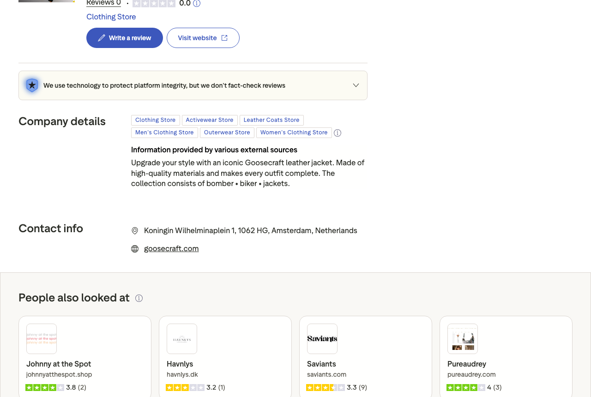
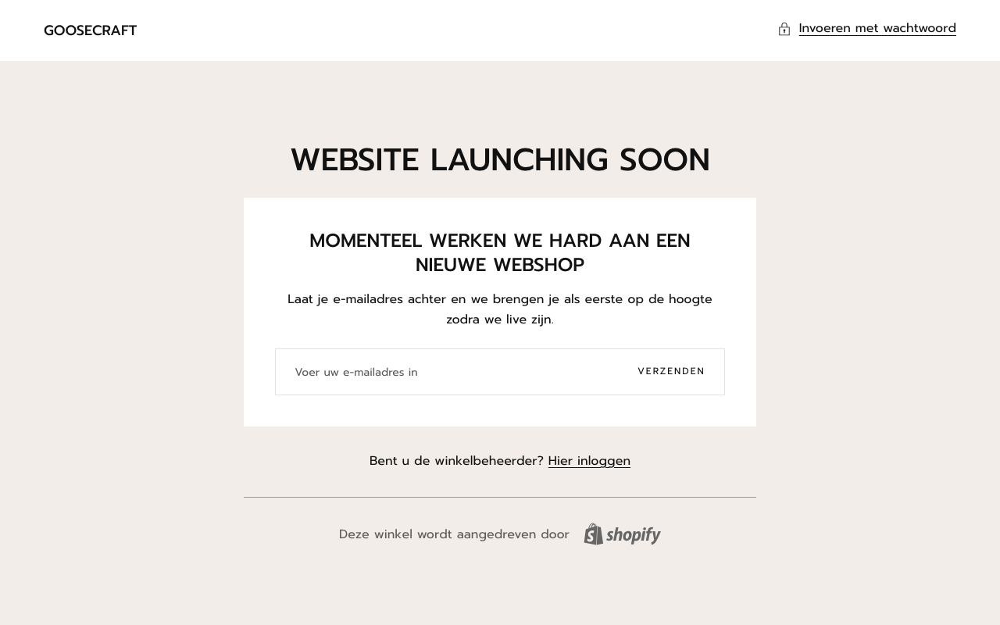

Backbone Customer Service
Persoonlijk voor Goosecraft — Amsterdam
Backbone Customer Service
Persoonlijk voor Goosecraft — Amsterdam
Backbone Customer Service
Persoonlijk voor Goosecraft — Amsterdam
Backbone Customer Service
Persoonlijk voor Goosecraft — Amsterdam
Goosecraft maakt premium lederen jassen. Prijzen lopen van 300 tot 600 euro en hoger. Klanten die dat soort bedragen uitgeven, doen onderzoek. Ze zoeken reviews. Ze willen weten of anderen tevreden zijn voor ze de koop sluiten.
En dan vinden ze Goosecraft op Trustpilot. Met een score van 0.0 en nul reviews.
Ik ben Jeffrey. Ik run Backbone Customer Service, een klantenservice-bureau dat zich richt op D2C merken in fashion en lifestyle. Ik stuur deze brief omdat ik iets zie wat ik niet kan laten passeren.
Een klant die overweegt een jas van 500 euro te kopen, heeft vragen. Hoe valt de maat? Hoe is de kwaliteit van het leer? Wat is het retourbeleid als de jas niet past? En wanneer die klant zoekt naar antwoorden van andere kopers, en niets vindt, is de kans groot dat hij verder zoekt bij een concurrent die die antwoorden wel geeft.
Goosecraft heeft klanttevredenheid. Die tevreden klanten schrijven alleen niks op Trustpilot, want ze worden er niet actief op gewezen. Dat is een structureel verlies.
Ik begon bij Trustpilot.

Het Trustpilot-profiel staat leeg en is niet geclaimd. Dat betekent dat Goosecraft er geen actieve controle over heeft. Iedereen kan dit zien, inclusief twijfelende kopers. Bij 300 tot 600 euro per aankoop is social proof geen leuk extraatje — het is een voorwaarde voor conversie bij nieuwe klanten die het merk nog niet kennen.

Merken in hetzelfde segment hebben honderden reviews. Goosecraft staat blanco. Dat is een zichtbaar nadeel op het moment dat klanten vergelijken. De klanten zijn er, de tevredenheid is er. Wat ontbreekt is een structurele uitnodiging om dat om te zetten in een openbare review.
Dit is geen kritiek op het product of de service. Ik zie een sterk merk met een duidelijke identiteit, maar een blinde vlek in reputatiebeheer die concrete omzetimpact heeft.
Het goede nieuws: dit is volledig te repareren. Een geclaimd profiel, een strategie om bestaande klanten uit te nodigen voor een review, en een systeem om nieuwe reviews consistent te verzamelen. Dat is het verschil tussen 0 en 200 reviews in zes maanden.
En 200 echte reviews bij een premium leren jas veranderen de aankoopbeslissing van nieuwe klanten fundamenteel. Dat is geen theorie. Dat heb ik bij andere merken gezien.

Ik ben Jeffrey. Samen met Dylan run ik Backbone Customer Service. Wij werken uitsluitend voor D2C merken in Nederland en België. Geen callcenters, geen generieke scripts. Klantenservice die past bij het merk en bij de prijs die je vraagt.
Ik laat je zien wat een actief Trustpilot-profiel voor Goosecraft kan opleveren, en hoe we dat in de praktijk aanpakken. Vrijblijvend. Maximaal 30 minuten.